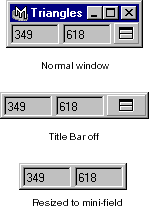

triangleMonitor

A "real-time" triangle count monitor that continually displays the total number of polygon mesh triangles for the entire scene.
The left field displays the "real" number of triangles; the right field displays total number of triangles, including construction history on a polygon mesh (Intermediate Objects upstream) and Reference Objects.
The button beside the triangle count allows you to toggle the window's Title Bar on and off. You can also toggle the Title Bar by highlighting the triangle count and pressing the ENTER key on the Numeric Keypad. With the Title Bar turned off, you can size the window to display only the triangle count.
Note: Not all operations will not trigger the update for the monitor. If you suspect the count is incorrect, unselect the current model.